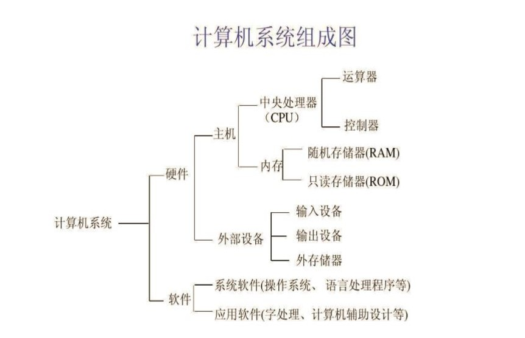

Python 理论部分复习¶
Abstrat
2026.7
理论部分：
- 题型：判断、单选、填空、选择性填空
- 范围：教材 1-8 章（除 2.7 、6.7.2 、7.3 、7.4 、8.3 、8.4 、8.5）
实验部分：
- 范围：教材 1-6 章（除 2.7 、6.7.2）
1 Python 概述¶
1.1 计算机基础¶
文本编码¶
-
ASCII 码：八位二进制表示字母、数字、专门符号
-
Unicode 码：包括字符集、编码方案等，为每种语言的每个字符设定了统一且唯一的二进制编码
- UTF-8 编码：把 Unicode 码转换字节或位
进制转换¶
-
1 位八进制等于 3 位二进制，1 位十六进制等于 4 位二进制
-
十进制转二进制：
- 整数部分不断除以 2 ，倒序取余数
-
小数部分不断乘以 2 ，顺序取整数部分
⚠️十进制小数不一定有对应的二进制形式！
原码、反码、补码¶
-
原码：8 位二进制，最高位 0 表示正，1 表示负
-
正数的原码、反码、补码一样
-
负数的反码：原码符号位不变，其他位取反
-
负数的补码：反码加 1
计算机组成¶

- 操作系统：管理和控制计算机硬件与软件资源的计算机程序，直接运行在“裸机”上的最基本的系统软件
- 如 Linux 、Windows 、Mac OS
程序设计语言¶
-
机器语言
-
汇编语言
-
高级语言：有编译型、解释型
- 如 C 、C++ 、Java 、Python
1.2 Python 特点¶
- 面向对象、解释型、高级动态语言
1.3 标识符和变量¶
-
标识符：由字母、下划线、数字组成，但不能以数字开头，并且区分大小写
-
关键字：不能作为标识符
False await else import pass None break except in raise True class finally is return and continue for lambda try as def from nonlocal while assert del global not with async elif if or yield -
常量：不能改变的量，如数学常数
-
变量：为了引用内存中的值而给它取的名字，实际是将名字和对象关联起来，赋值时不是实际复制值，而是对象的引用
- 内置函数
id()返回对象的标识，即对象地址
- 内置函数
1.4 输入及输出函数¶
输入¶
s = input() # 输入取成字符串
m, n = input().split() # 输入多个值，默认空格划分
输出¶
print(1, 2) # 输出结尾自动换行
print(1, 2, end = '') # 结尾不换行
2 用 Python 语言编写程序¶
2.1 数字类型¶
-
整数
int⚠️两个整数相除（
/），结果为浮点数- 开头
0b或0B代表二进制数 - 开头
0o或0O代表八进制数 - 开头
0x或0X代表十六进制数
- 开头
-
浮点数
float⚠️浮点数运算有误差
2.1 - 2.0 == 0.1 # 返回为 False⚠️浮点数整除（
//）、取余（%），结果都是浮点数- 可以使用科学计数法表示，如
0.000012表示为1.2e-5- \(e\) 的前后都不能为空，并且后面要是整数
- 可以使用科学计数法表示，如
-
复数
complex：由实部和虚部组成，虚部用j表示，如2 + 3jreal方法取实部，imag方法取虚部，complex()函数创建复数
print(complex(1)) # 输出 (1+0j) print(complex(1j)) # 输出 (1j) print(complex(0, 1)) # 输出 (1j)⚠️
complex(j)会报错
math 库¶
使用 math 库之前，需要 import 导入
import math
math.pi # 返回 π 值
math.sqrt(9) # 返回 3.0
根据导入方式调用函数
from math import sqrt
sqrt(9) # 注意这里使用 math.sqrt() 会报错
2.2 字符串 str¶
字符串用 '' 或 "" 括起来
'abc' # 返回 'abc'
print('abc') # 输出 abc
转义字符¶
有些字符直接输入有歧义，用转移字符替代
| 转义字符 | 含义 |
|---|---|
\\ |
\ |
\' |
' |
\" |
" |
\a |
响铃 |
\b |
退格 |
\n |
换行 |
\t |
横向制表符 |
\r |
回车 |
\f |
换页 |
\ooo |
最多三位八进制数表示 ASCII 码 |
\xyy |
两位十六进制数（在 x 之后）表示 ASCII 码 |
字符串运算¶
-
str() + str()两个字符串拼接 -
str() * int()一个字符串复制后拼接
2.3 布尔类型 bool¶
布尔类型的变量只有 True 和 False 两种值，可以通过关系运算符和逻辑运算符计算
关系运算符¶
==!=>>=<<=
⚠️不同类型比大小会报错
逻辑运算符¶
逻辑运算符的对象可以是任意类型，其中 False 、None 、int(0) 、float(0.0) 、"" 、空的容器类型对象，都判断为假，其他为真
按照优先级由高到低为：
not exp- 若
exp为真，则结果为True - 若
exp为假，则结果为False
- 若
exp1 and exp2- 若
exp1为真，则结果为exp2的值 - 若
exp1为假，则结果为exp1的值（不计算exp2）
- 若
exp1 or exp2- 若
exp1为真，则结果为exp1的值（不计算exp2） - 若
exp1为假，则结果为exp2的值
- 若
⚠️
and和or的返回结果不一定是布尔型
2.4 空类型¶
空类型只有一个值，即空值，用 None 表示
⚠️注意
None不能理解为 0None == 0 # False
2.5 列表¶
用 [] 包裹，元素之间用 , 隔开
print([1, 2]) # 输出 [1, 2]
列表推导式¶
[i for i in range(5)] # [0, 1, 2, 3, 4]
[i*2 for i in range(5) if i%2 == 1] # [2, 6]
2.6 运算符的优先级和结合性¶
-
**幂运算从右向左2 ** 3 ** 2 # 512 -
+、-表示正号和符号2 ** -2 # 0.25 -
……
2.7 相关内置函数¶
- 内置函数
type()查询对象的类型- 如
type('python')返回<class 'str'>
- 如
类型转换函数¶
-
bool() -
int()int() # 0 int("02") # 2 int(" 3 ") # 3 int("3 4") # 报错 int("11", 2) # 29 int(0b11) # 3 -
float() -
complex() -
str() -
ord()返回 Unicode 字符对应十进制数 -
chr()返回十进制数对应的 Unicode 字符 -
bin()将十进制数转为二进制字符串 -
oct()将十进制数转为八进制字符串 -
hex()将十进制数转为十六进制字符串 -
list()⚠️传入参数必须有包裹，否则报错
list(1, 2) # 报错 list((1, 2)) # [1, 2] list('12') # ['1', '2']
表达式¶
表达式可以计算，由常量、变量、运算符或函数按规则构成，返回运算结果
1 if n % 2 == 1 else 0 # 条件表达式
2.8 语句¶
- 一行中多条语句，用
;隔开 - 长语句要跨行时，行尾用
\表示
赋值语句¶
a, b = b, a # 交换 a, b 的值
a = b = 1 # 链式赋值
a = (b = 1) # 报错，因为 `b = 1` 是一个语句，没返回
a *= 3 + 1 # a = a * (3 + 1)
if 语句¶
if exp1:
do1
elif exp2: # 可以没有
do2
else: # 可以没有
do3
⚠️
else总是与和自己缩进相同的最近的if匹配
for 语句¶
for variable in lst:
do
-
range(start, stop, step)函数- 开始计数包含
start，结束计数不包含stop step可以省略，默认 1
list(range(3)) # [0, 1, 2] sum(range(3)) # 3 range(3)[1] # 1 - 开始计数包含
2.9 格式化输出¶
format() 函数¶
采用内置函数 format() ，返回为字符串
"{:d}".format(11) # 输出整型十进制 11
"{:b}".format(11) # 转二进制输出 1011
"{:o}".format(11) # 转八进制输出 13
"{:x}".format(11) # 转十六进制输出 b
"{:.2f}".format(11.111) # 保留小数点后 2 位输出 11.11
"{:.2e}".format(11.111) # e前保留 2 位小数，科学计数法输出 1.11e+01
"{}".format('hi') # 直接输出字符串
"Hello, my age is {}".format(20) # 输出 Hello, my age is 20
"{:5d}".format(11) # 指定输出宽度 5 ，默认右对齐（超过宽度直接输出）
"{:5.2f}".format(11.111) # 指定输出宽度 5 （默认右对齐，小数点算一位），保留 2 位小数
"{:5s}".format('hi') # 指定输出宽度 5 ，默认左对齐
"{:>5s}".format('hi') # 指定右对齐，输出宽度 5
"{:<5d}".format(11) # 指定左对齐，输出宽度 5
"{:^5d}".format(11) # 指定居中，输出宽度 5
"{:*^5d}".format(11) # 指定居中，输出宽度 5 ，用 * 填补空位
"{0:5d}{1:5d}{2:5d}".format(11, 11, 11) # 输出三个格式化参数
f-string 方法¶
同样返回字符串
f"{11}" # 直接输出
f"{11:08d}" # 指定宽度 8 ，（数字默认右对齐）左边补 0
f"{11:b}" # 转二进制输出
f"{11:x}" # 转十六进制输出
f"{11.111:.2f}" # 保留二位小数输出
f"{1111:,}" # 加千位分隔符输出
f"{11.111:.2%}" # 百分比输出，并且百分数保留二位小数（相当于实际保留四位小数）
f"{11:<10}" # 左对齐，指定宽度 10 输出（默认补空格）
f"{11:*^10}" # 居中，指定宽度 10 ，补 *
f"{'s':>10}" # 右对齐，指定宽度 10 输出
f"{1}{2}{3}" # 多个参数输出
2.10 对象¶
Python 用对象表示数据，对象三要素：
id存储位置type类型value值
对象可以分为：
- 可变对象：值可变，但是修改后
id不变，如列表、集合、字典 - 不可变对象：值不可变，修改值即改变
id，如数字、字符串、逻辑量、元组
3 字符串、列表、元组¶
3.1 序列¶
序列是一类数据容器的统称，容器中包含多个元素，有先后次序，通过下标访问
- 例如列表、字符串、元组、
range()结果
访问¶
以一个名称为 a 的序列为例：
a[0]访问第一个元素a[-1]访问最后一个元素a[0:2]访问包括下标 0 和 1 的子序列a[0:2:2]访问从下标 0 开始的子序列，步长 2 （默认步长 1 ）a[::-1]访问整个序列，步长 -1 即倒着访问
⚠️访问序列单个元素越界，会报错
复制¶
-
将一个序列变量赋值给另外一个变量，它们指向同一个序列
a = [1, 2] b = a # 如果修改 a ，那么 b 也会改变，反之亦然 -
使用切片，可以创建一个新序列
a = [1, 2] b = a[:] # 最外层各自独立⚠️这种方法是浅拷贝，只有第一层互不影响，这意味着如果第一层中有可变对象，那么
a或b改动它时会影响对方
拆包¶
可以把一个序列的元素赋值给多个变量，但是数量必须对应，否则报错
s = 'abcd'
a, b, _, _ = s # _ 表示匿名变量，只获取 a = 'a' 和 b = 'b'
a, *b, d = s # 变量名前加 * 获取子序列，获得 a = 'a' 和 b = ['b', 'c'] 和 d = 'd'
加法、乘法¶
+两个序列拼接*（一个序列和int相乘）重复序列
判断序列元素¶
1 in [0, 1, 2] # True
[1, 2] in [0, 1, 2] # False
[1, 2] in [0, [1, 2]] # True
'e' in 'hello' # True
'he' in 'hello' # True
其他函数¶
-
len()返回序列元素个数 -
max()返回序列中最大值 -
min()返回序列中最小值
⚠️大小按照 Unicode 码比较
- 根据元素值获取元素索引
lst = [3, 4, 5, 4, 5] lst.index(4) # 1 （返回第一个值的位置） lst.index(0) # 找不到会报错
3.2 字符串 str¶
- 如果有多对引号，必须
''和""交替出现，否则报错 ''''''括起来的字符串可以包含多行，输出时根据输入格式分行- 字符串引号开始前加
r表示是原始字符串，不会识别转义字符 - 字符串不可修改，只能整个重新赋值，表示一个新的字符串
常用函数¶
s.title()每个单词的首字母改大写（以非字母开头的词，则把第一个字母改为大写）s.lower()大写字母改小写s.upper()小写字母改大写s.strip()删除两端空格s.rstrip()删除右端空格s.lstrip()删除左端空格
s.find(sub[, start[, end]])查找子串sub首次出现的位置（没有返回 -1 ）s.replace(old, new)用new替换old''.join(x)把序列x（元素都要为字符串类型）合并为字符串，''中填分隔符s.split()拆分成列表s.count(sub[, start[, end]])计算sub出现的次数
3.3 列表 list¶
- 列表中的元素可以是不同类型
- 列表中的元素可以修改
创建¶
a = [] # 空列表
a = [1, 2, 3]
a = list('hello') # ['h', 'e', 'l', 'l', 'o']
a = list(range(5)) # [0, 1, 2, 3, 4]
删除元素¶
a = [1, 2, 3]
del a[1]
# a = [1, 3]
切片赋值¶
用另外一个列表替换当前列表切片部分
a = [1, 2, 3]
a[1:] = [1]
# a = [1, 1]
常用函数¶
l.append(x)末端添加元素xl.clear()移除所有元素l.count(x)计算x出现的次数l.copy()复制一个新列表，注意这是深拷贝，新列表与原列表完全独立l.extend(x)把列表x添加到末端l.index(value[, start[, stop]])查找第一个值为value的下标（没有则报错）l.insert(index, x)在下标index处插入元素x（指定位置不存在则加末端）l.pop(index)返回并删除一个元素，默认最后一个l.remove(value)删除值为value的第一个元素（没有则报错）l.reverse()翻转列表l.sort()排序（默认升序，并且元素要可比较大小，否则报错）
3.4 元组 tuple¶
-
元组的元素不可以修改，包括增添、删除、排序等 >⚠️实际上这个不能修改，是指元素的地址不能修改，而地址指向的对象如果可变，是可以修改的。例如元组的一个元素为一个列表，那么列表里面的内容可以修改。
-
元组的元素可以是任意类型
- 使用
()包裹
创建¶
a = (1, 2, 3)
a = tuple([1, 2, 3])
常用函数¶
t.count(x)计算元素x出现的次数t.index(x)查找第一个x出现的下标（没有则报错）
3.5 random 库¶
random 模块用于产生伪随机数，需要先 import random
random.random()返回 \([0.0, 1.0)\) 区间内的浮点数random.uniform(a, b)返回 \([a, b]\) 区间内的浮点数random.randint(a, b)返回 \([a, b]\) 区间内的整数random.randrange(start, stop, step)在指定范围内返回随机数random.choice(sequence)从序列中获取随机数random.shuffle(x)将列表x中的元素随机排列random.sample(sequence, k)从指定序列中随机获取k个元素并随机排序random.seed(n)对随机数生成器进行初始化
4 条件、循环、其他语句¶
4.1 条件语句¶
- 基本条件语句
- 条件语句可以嵌套
4.2 循环语句¶
while 循环¶
while exp:
do1
else: # 可以省略
do2
⚠️如果
while循环正常退出，会执行else语句；但是while循环中出现break，那么不会执行else语句
for 循环¶
for variable in lst:
do1
else: # 可以省略
do2
⚠️如果
for循环正常结束，会执行else语句；但是for循环中出现break，那么不会执行else语句
关键字说明¶
break结束所在的这一个循环体，执行之后的语句continue跳过所在的这一轮循环，进行下一轮循环pass不执行任何操作，用于在未确定执行什么操作时占位
4.3 搜索算法¶
线性搜索¶
依次遍历
二分搜索¶
要求序列有序，效率比线性搜索高
4.4 排序¶
选择排序¶
以目标升序为例，每次选取未排序数据中的最小值，加入已排序序列最后
冒泡排序¶
以目标升序为例，不断两两比较相邻数据，使得大数据排在小数据之后
5 集合和字典¶
5.1 集合 set¶
- 集合是一类容器，元素没有顺序，并且值不能重复
- 使用
{}包裹 - 集合的元素必须是不可变对象，例如列表、字典、集合就不可以
创建¶
a = {1, 2, 3, 1} # 自动去掉重复元素 a = {1, 2, 3}
a = set() # 创建空集合
a = set([1, 2, 3]) # 转换成集合
⚠️
a = {}创建的是一个空字典，而不是空集合 ⚠️集合会自动调整内部元素的顺序
访问¶
由于集合内元素无序，不能通过下标访问，一般通过遍历访问
元素、子集、超集、相等的判断¶
in判断元素是否在集合中s1.issubset(s2)判断s1是否为s2的子集，s2.issuperset(s1)判断s2是否为s1的超集- 如果集合
s1的元素同样都在s2中，那么s1为s2的子集，s2为s1的超集
- 如果集合
==判断两个集合是否包含完全相同的元素<、<=、>、>=可以判断子集、真子集、超集、真超集
常用函数¶
以操作名称为 a 的集合为例
len(a)min(a)max(a)sum(a)a.add(x)a.remove(x)如果x不存在会报错
运算¶
以两个集合 s1 和 s2 的运算为例
s1.union(s2)求并集s1 & s2求交集s1 - s2求s1中有而s2中没有的元素集合s1 ^ s2求并集挖掉交集
5.2 字典 dict¶
字典是用键值做索引来存储数据的集合，一个键值和对应数据形成一个条目
- 不可变对象才能作为字典的键值，例如数字、字符、元组
创建¶
# 创建空字典
d = {}
d = dict()
d = {'a':1, 'b':2}
d = dict(a = 1, b = 2)
d = dict([('a', 1), ('b', 2)])
操作¶
d = {1:10, 2:20, 3:30}
# 用键值访问数据
d[1] # 返回 10
d[0] # 找不到，报错
# 用键值修改条目
d[1] = 100
# 用键值增加条目
d[4] = 40
# 用 del 删除条目
del d[1]
del d[0] # 不存在键值，会报错
# 假定不理会报错，到目前为止 d = {2:20, 3:30, 4:40}
# 用键值遍历
for key in d:
print(d[key])
# 计算条目总数
len(d)
# 检查某个键值是否在字典中
1 in d # True
0 in d # False
# 比较两个字典是否相同
dd = {2:20, 3:30, 4:40}
ddd = {2:10, 3:30, 4:40}
d == d # True 因为键值和数据都相同
d == ddd # False
# 合并字典，如果两个字典有相同键值，那么数据取后一个
d_merge = {**d, **ddd} # d_merge = {2:10, 3:30, 4:40}
常用函数¶
以名称为 d 的字典为例
d.keys()返回全部键值组成的序列d.values()返回全部数据组成的序列d.items()返回序列，其中每一项是一个元组，包含键值和对应数据d.clear()删除所有条目d.get(key, value)返回键值key对应的数据，找不到返回valued.pop(key)返回键值key对应的数据并删除这个条目，找不到会报错
6 函数¶
6.1 定义¶
-
内置函数
- 如
len()
- 如
-
自定义函数
def f():
-
匿名函数（适合定义简单函数）
- 如
f = lambda x, y: x + y
- 如
函数也是一个对象，定义好之后，才能使用
6.2 参数传递¶
⚠️当实参是不可变对象时，函数中形参改变不影响实参；当实参是可变对象时，函数中形参改变可能会影响实参
位置参数¶
按传入实参位置复制给形参
关键字参数¶
指定实参对应的形参名字
⚠️如果同时使用位置和关键字传参，那么优先位置传参，关键字参数不能在中间隔断，只能放最后，但关键字参数内部可以打乱顺序
默认值参数¶
在定义函数的时候可以指定参数默认值，但是默认值同样只能放最后
如以下函数定义会报错
def f(x = 1, y):
return x
不定长数目参数¶
-
def f(a, *b)将不知数目的参数收集为元组 -
def f(a, **b)将不知数目的参数收集为字典（要求实参传入带变量名）
6.3 返回¶
- 用
return语句返回，没有return默认返回值为None
6.4 命名空间和作用域¶
-
标识符查找顺序是：局部 \(\to\) 全局 \(\to\) 内置
-
如果希望在函数中（局部）使用全局变量，使用
global关键字声明该变量
6.5 内置函数¶
注意这与内置模块中的函数这一概念不同，内置模块例如
math、random需要导入，而内置函数都不用专门导入
sorted()¶
对字符串、列表、元组、字典等对象进行排序，返回一个新的列表，参数包括
iterable序列key（可省略）具体用于排序的元素，例如字典的数据reverse（可省略）True降序，False升序，默认升序
map()¶
根据提供的函数对序列进行映射，返回一个新列表或迭代器，参数有
function映射方法iterable序列
例如
a = map(int, input().split())
zip()¶
将可迭代的对象作为参数，将对象中对应的元素打包成一个个元组，返回由这些元组组成的列表或迭代器
例如
a = [1, 2, 3, 4]
b = [10, 20, 30]
c = [100, 200, 300]
zip(a, b, c) # [(1, 10, 100), (2, 20, 200), (3, 30, 300)]
eval()¶
把字符串当成 Python 表达式来执行，并返回结果，如
eval('1 + 2 + 3') # 返回 6
exec()¶
把字符串当成 Python 程序运行，如
exec('print("hi")') # 输出 hi ，但是无返回
all()¶
将可迭代对象作为参数，参数都是 True 时返回 True ，否则返回 False
any()¶
将可迭代对象作为参数，参数有 True 时返回 True ，否则返回 False
6.6 程序结构¶
- Python 标准库拆分为多个模块，每个模块以文件形式存放，定义一组 Python 函数和其他对象
- 模块需要
import导入
模块的引入和删除¶
以 math 模块为例
import math
import math as m # 以 m 作为别名
from math import * # 调用时不需要加模块名
from math import sqrt # 调用时这个函数不需要加模块名
del math # 删除模块
6.7 递归¶
函数调用自身，必须有终止条件和递归条件
7 文件¶
7.1 文件读写¶
打开文件¶
file = open(filename, mode)
file函数返回的文件对象filename文件名mode字符串- 第一部分指明操作
r只读（默认）w覆盖写入，不存在filename时创建一个新文件a追加写入，不存在filename时创建一个新文件x创建一个新文件并写入，已存在则出错+与上述方式一起使用，实现读与写
- 第二部分（可省略）指明文件类型
t文本类型文件b二进制类型文件
- 第一部分指明操作
其他常见读写函数¶
以文件对象 f 为例
f.read(size)读取长度为size的字符串（如果未给定参数或为负数，则读取所有内容）f.readline()读取整行，返回字符串f.readlines()读取所有行，返回列表f.write(s)把字符串s写入文件f.writelines(s)写入元素都为字符串的列表（要换行需自行加入换行符）f.seek(off, whence=0)设置文件当前位置f.tell()返回当前文件读写的位置f.close()关闭文件
7.2 异常处理¶
可以使用 try-except 语句实现异常处理
try:
do
except exp1: # 可以有多个
do1
except:
do2
else:
do3
finally:
do4
- 正常程序执行
try中的内容，然后执行else中的内容 - 发生异常时，终止程序，跳转到对应
except异常处理块中执行，找不到则执行没有exp的那个except - 不论有无异常，最后都执行
finally中的内容
常见的标准异常¶
| 异常 | 描述 |
|---|---|
SystemExit |
解释器请求退出 |
FloatingPointError |
浮点计算错误 |
OverflowError |
数值运算超出限制 |
ZeroDivisionError |
被除数为 0 |
KeyboardInterrupt |
用户中断执行 |
ImportError |
导入模块或对象失败 |
IndexError |
序列中无此索引 |
RuntimeError |
运行时错误 |
AttributeError |
对象无此属性 |
IOError |
输入或输出操作失败 |
OSError |
操作系统错误 |
KeyError |
映射中没有这个建 |
TypeError |
对类型无效的操作 |
ValueError |
传入无效参数 |
raise 语句¶
采用 raise 语句可以自己定义异常类型
assert 语句¶
断言语句 assert ，在系统变量 _debug_ 为 True 时有效
8 类和对象¶
8.1 面向对象程序设计¶
面向对象程序设计使用对象进行程序设计，实现代码复用和设计复用
- 面向对象的三大特点是：封装、继承、多态
8.2 类与对象¶
- 类是定义属性和行为的模版
- 每个类有自己的命名空间，类名就是空间名
- 每个对象也有自己的名字空间
- 存储在类名称空间中的名称是类的成员
- 类成员包含类属性、类方法（使用
.访问）
- 类成员包含类属性、类方法（使用
- 用类产生的对象称为实例（可以认为就是对象）
- 可以用内置函数
isinstance(obj, Cla)来测试对象obj是否为类Cla的实例
创建类¶
# 创建类
class Aclass():
# 创建对象
a = Aclass()
init 方法¶
_init_方法是 Python 类中一种特殊方法，称为构造方法，当创建类的对象时被自动调用_init_方法中可以声明类所产生的对象的属性，并为其赋初值，注意不能有返回值
self 参数¶
- 按惯例，类的实例方法的第一个形参为
self，代表将来要创建的对象本身 - 在类的方法中访问实例变量时，要以
self为前缀 - 在外部通过对象调用对象方法时不需要传递这个参数，而通过类调用对象方法则需要显式为
self参数传值